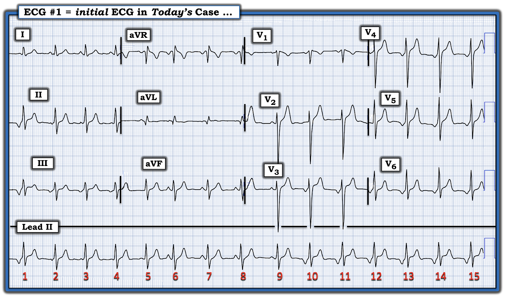
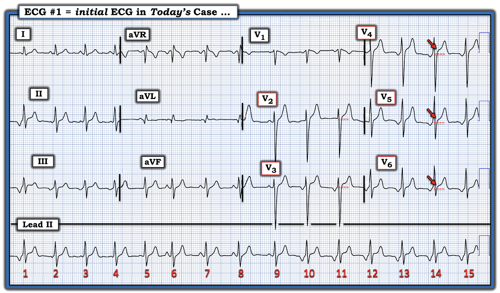
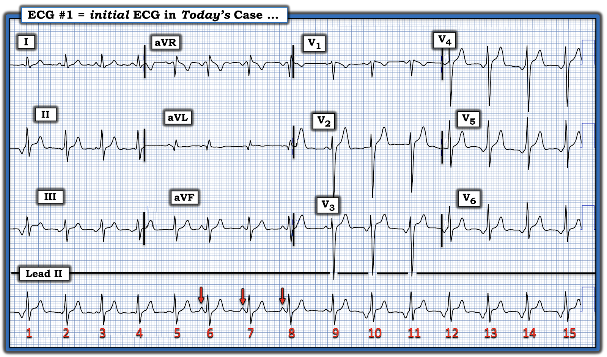
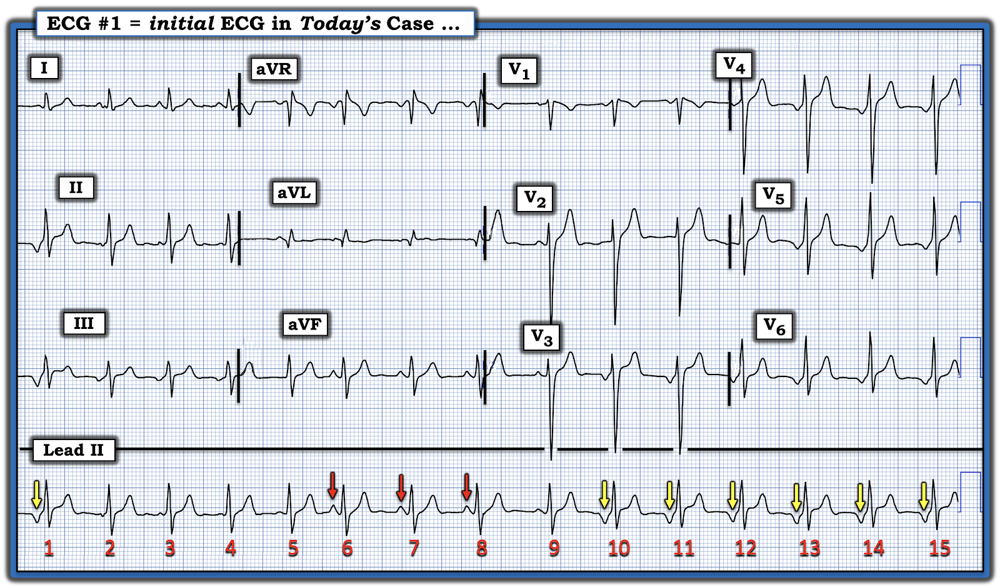
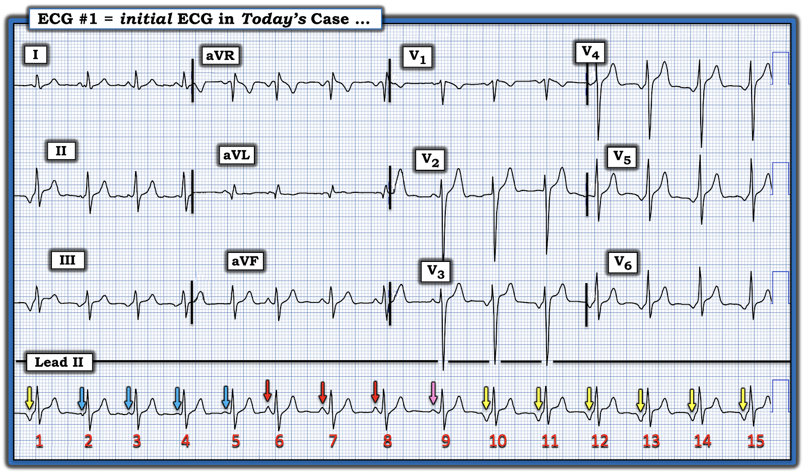
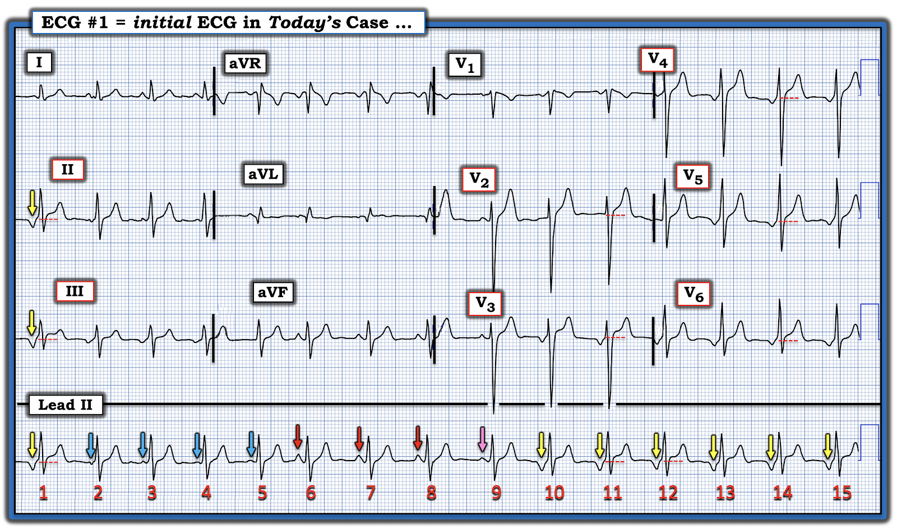
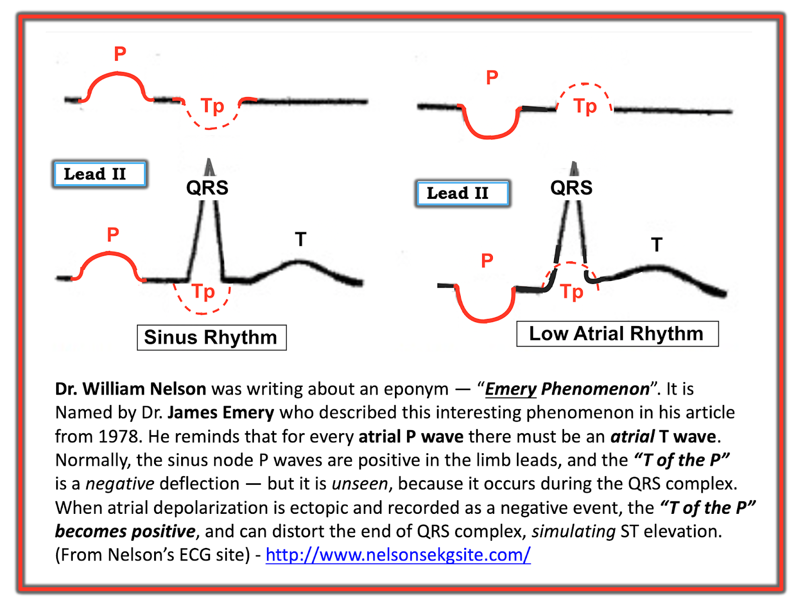

ECG Blog #510 — Viêm cơ tim hay nhồi máu cơ tim cấp?
Bạn được xem điện tâm đồ trong Hình-1 — ghi ở một người trẻ tuổi trưởng thành bị hồi hộp đánh trống ngực. ST chênh lên ở các chuyển đạo trước ngực là hậu quả của:
- một nhồi máu cơ tim cấp (MI)?
- hay viêm cơ tim?
- hay đó là một biến thể tái cực bình thường?


==============================
Về ST chênh lên …
- Để rõ ràng, trong Hình-2 — các đường chấm ĐỎ ở các chuyển đạo từ V2 đến V6 đánh dấu đường nền dùng để đánh giá ST chênh lên ở các chuyển đạo trước ngực trên bản ghi này.
- Các mũi tên ĐỎ đánh dấu điểm J ở các chuyển đạo V4,V5,V6 — là mốc để đánh giá mức độ ST chênh lên.
CÂU HỎI về Hình-2:
- BẠN có bắt đầu việc đọc điện tâm đồ ban đầu của ca hôm nay bằng cách đánh giá nhịp không?
- GỢI Ý: Vì sao việc bắt đầu bằng đánh giá nhịp lại đặc biệt quan trọng với bản ghi hôm nay?


==============================
TRẢ LỜI:
Lý do cần đánh giá nhịp trước tiên ở dải nhịp chuyển đạo II dài (ở phía dưới bản ghi hôm nay) — là vì hình dạng của sóng P không phải lúc nào cũng giống nhau, và mức độ ST chênh lên trên điện tâm đồ này thay đổi tùy theo hình dạng của sóng P đi trước mỗi nhát.
- ĐIỂM THEN CHỐT (PEARL) #1: Ca hôm nay là một ví dụ điển hình cho thấy vì sao cần bắt đầu đọc mọi điện tâm đồ bạn gặp — bằng cách dành 2-3 giây có chủ đích nhìn phía trước từng phức bộ QRS xem có sóng P hay không.
- Nếu có — hình dạng của từng sóng P có giống nhau không?
- Khoảng PR có hằng định không?
Tùy theo cách cài đặt máy điện tâm đồ — một hoặc nhiều dải nhịp chuyển đạo dài có thể được hiển thị bên dưới điện tâm đồ 12 chuyển đạo.
- Tôi ưa chuộng các hệ thống hiển thị dải nhịp chuyển đạo II dài (thay vì chuyển đạo V1 hay chuyển đạo khác) — bởi vì NẾU có sóng P dương ở chuyển đạo II với khoảng PR hằng định phía trước mỗi phức bộ QRS — thì chắc chắn đó là nhịp xoang bình thường (Điều này không nhất thiết đúng nếu dùng một chuyển đạo khác ngoài chuyển đạo II để ghi dải nhịp chuyển đạo dài).
============================
Hãy NHÌN LẠI dải nhịp chuyển đạo II dài trong Hình-2.
- CÂU HỎI: Bản ghi này có nhịp xoang không?
==============================
TRẢ LỜI:
Sóng P dương với khoảng PR hằng định chỉ có ở 3 nhát trên bản ghi hôm nay. Như minh họa trong Hình-3 — chỉ có các nhát #6,7,8 là nhát dẫn truyền từ xoang (mũi tên ĐỎ), dù khoảng R-R thay đổi.


CÂU HỎI:
- Có bao nhiêu hình dạng sóng P trong Hình-3?
- Về mặt lâm sàng — Điều này có ý nghĩa gì?
==============================
TRẢ LỜI:
Có ít nhất 3 (nếu không muốn nói là 4) hình dạng sóng P trên bản ghi hôm nay. Chúng tôi trình bày hình dạng gặp nhiều nhất trong Hình-4.
- Các mũi tên VÀNG ở dải nhịp chuyển đạo II dài đánh dấu một loạt 6 nhát liên tiếp có sóng P âm lớn đi trước, với khoảng PR ngắn nhưng hằng định ( = các nhát #10-đến-15). Khoảng R-R của 6 nhát này khá hằng định — với tần số vừa dưới 100/phút. Điều này gợi ý rằng 6 nhát này là biểu hiện của một ổ bộ nối gia tốc.
- Khả năng khác (ít gặp hơn) cho loạt 6 phức bộ QRS có sóng P âm với kích thước như vậy đi trước — là các nhát #10-đến-15 có thể là biểu hiện của một ổ nhĩ thấp.


Để đơn giản, trong Hình-4 — Hãy giả định rằng tất cả các sóng P ở mũi tên VÀNG đều xuất phát từ cùng một ổ bộ nối gia tốc.
- Khi đó ta phải giải thích vì sao có những hình dạng sóng P khác đi trước các nhát còn lại trên bản ghi này.
- Lưu ý rằng nhịp trong Hình-4 bắt đầu bằng một sóng P âm kích thước lớn tương tự ( = mũi tên VÀNG đầu tiên trong Hình-4).
CÂU HỎI:
Tôi đánh dấu các hình dạng sóng P khác nhau trên dải nhịp chuyển đạo II dài bằng thêm các mũi tên màu trong Hình-5.
- Bạn có thể giải thích cơ chế của nhịp hôm nay không?


SUY NGHĨ CỦA TÔI về Nhịp Hôm nay:
Có thể có nhiều hơn một cách giải thích cho trình tự bất thường của các hình dạng sóng P trong Hình-5.
- Tôi thấy dễ nhất là bắt đầu bằng việc nhìn vào 3 nhát dẫn truyền từ xoang ( = 3 sóng P ở mũi tên ĐỎ đánh dấu các sóng P dương đi trước các nhát #6,7,8 trong Hình-5).
- Lưu ý rằng sóng P ở mũi tên HỒNG đi trước nhát #9 có hình dạng sóng P trung gian giữa 3 sóng P dương lớn hơn đi trước các nhát dẫn truyền từ xoang #6,7,8 — và 6 sóng P âm liên tiếp đi trước các nhát #10-đến-15.
- Tôi nghi rằng lý do của hình dạng sóng P trung gian này — là sóng P ở mũi tên HỒNG đi trước nhát #9 là một nhát hỗn hợp nhĩ xảy ra khi nhịp xoang nền đang bị lấn át bởi nhịp bộ nối gia tốc xuất hiện từ nhát #10.
- Lưu ý rằng nhịp trong Hình-5 bắt đầu bằng một nhát bộ nối đơn độc (được đánh dấu bằng mũi tên VÀNG đi trước nhát #1).
- Tôi không chắc liệu 4 sóng P ở mũi tên XANH tiếp theo tại các nhát #2,3,4,5 là biểu hiện của sự xuất hiện một ổ nhĩ khác (như có thể gặp trong ổ tạo nhịp nhĩ lang thang) — hay nhiều khả năng hơn là các nhát hỗn hợp nhĩ bổ sung cho đến khi nhát xoang #6 đến hơi sớm tạm thời giành quyền chi phối — trước khi bị nhịp bộ nối gia tốc chiếm quyền bắt đầu từ các nhát #9,10.
Tổng Hợp Lại Tất cả:
Về mặt lâm sàng — chi tiết về việc mỗi sóng P có hình dạng khác nhau biểu thị điều gì thì ít quan trọng hơn nhận định tổng thể về những gì dường như đang diễn ra.
- Bệnh nhân hôm nay là một người trẻ tuổi trưởng thành đến khám vì hồi hộp đánh trống ngực.
- Nhịp nền dường như là nhịp xoang (các nhát #6,7,8).
- Nhịp xoang này dường như từng lúc bị chiếm quyền bởi một nhịp bộ nối gia tốc.
- Mặc dù chỉ với một bản ghi này thì không thể loại trừ sự tương tác với ổ tạo nhịp nhĩ lang thang — tôi cho rằng khả năng này thấp hơn so với việc có một loạt nhát hỗn hợp nhĩ, khi quyền chi phối nhịp chuyển qua lại giữa các nhát xoang và ổ bộ nối gia tốc (Sự thay đổi hình thái sóng P thường gặp trong ổ tạo nhịp lang thang có xu hướng diễn ra từ từ hơn nhiều so với những gì ta thấy ở đây).
- ĐIỂM THEN CHỐT (PEARL) #2: Thực tế là nhịp bộ nối gia tốc không thường gặp ở người lớn. Vì vậy, việc đánh giá bệnh nhân này nên bao gồm xác định XEM có một hay nhiều yếu tố thúc đẩy nền tảng hay không (tức là đánh giá điện giải đồ huyết thanh, công thức máu, xét nghiệm chức năng tuyến giáp và siêu âm tim để loại trừ bất thường cấu trúc — cũng như khai thác bệnh sử cẩn thận để loại trừ rượu và/hoặc sử dụng chất kích thích tiêu khiển có thể thúc đẩy nhịp gia tốc chiếm quyền này).
- Nếu nhịp này vẫn kéo dài dù đánh giá âm tính, không tìm ra nguyên nhân thúc đẩy — thì điều trị theo kinh nghiệm bằng thuốc chẹn ß có thể là cách tiếp cận đơn giản và hiệu quả nhất. (Rất tiếc, tôi không có thông tin theo dõi về phương án xử trí đã được chọn cho bệnh nhân này).
==============================
Nhưng còn ST chênh lên mà ta đã thấy trong Hình-2 thì sao?
- Tôi đánh dấu ST chênh lên này trong Hình-6 — bằng các đường chấm ĐỎ ở những chuyển đạo có ST chênh lên.
CÂU HỎI:
- Có bất kỳ mối liên quan nào giữa hình dạng sóng P — và việc phức bộ QRS đi sau có biểu hiện đoạn ST chênh lên hay không?


TRẢ LỜI:
Ca hôm nay là một minh họa độc đáo của hiện tượng Emery — trong đó sóng tái cực nhĩ ngược hướng (tức là sóng T của sóng P) tạo ra hiệu ứng ST chênh lên "giả" do sóng P âm ở các chuyển đạo dưới có kích thước tương đối lớn, với khoảng PR ngắn (Xem ECG Blog #308).
- Phần lớn trường hợp — Tp (còn gọi là "Ta" hay sóng T nhĩ) bị che lấp bên trong phức bộ QRS. Nhưng trong những trường hợp không thường gặp khi thấy một sóng P âm lớn với khoảng PR ngắn — sóng Tp ngược hướng tạo thành có thể giả nhồi máu cấp (Xem Bình luận của tôi trong bài đăng ngày 3 tháng Sáu năm 2020 trên Dr. Steve Smith's ECG Blog để biết bàn luận về hiện tượng Emery trong bối cảnh một ca đã được đưa đi thông tim vì hình ảnh ST chênh lên "giả" này).
Để minh họa hiện tượng này — tôi đã chỉnh sửa Hình-7, lấy từ một bài đăng năm 2015 trên trang web ECG Rhythms của Arnel Carmona.
- Như gợi ý trong Hình-7 — sóng tái cực nhĩ (tức là sóng T của sóng P) luôn hiện diện — nhưng với nhịp xoang, thời điểm của Tp phần lớn sẽ trùng với thời điểm của phức bộ QRS, và do đó không được nhận thấy trên điện tâm đồ (nửa vòng tròn chấm ĐỎ, nhìn thấy ở bên trái Hình-7).
- Như minh họa trong Hình-7 — Tp sẽ có hướng ngược với sóng P. Do đó, với nhịp xoang bình thường (trong đó, theo định nghĩa, sóng P sẽ dương ở chuyển đạo II) — TP sẽ âm ở các chuyển đạo dưới.
- NẾU sóng P ở chuyển đạo II âm (như có thể gặp với hoặc một nhịp nhĩ thấp hoặc nhịp bộ nối) — thì Tp sẽ dương (nửa vòng tròn chấm ĐỎ, nhìn thấy ở bên phải Hình-7). Nếu sóng Tp lớn và dương — nó có thể làm biến dạng phần cuối phức bộ QRS, và tạo ra ấn tượng sai lầm là ST chênh lên.


Hình-7: Minh họa hiện tượng Emery. (Tôi đã chỉnh sửa Hình này từ bài đăng năm 2015 của BS Bojana Uzelac trên trang web ECG Rhythms của Arnel Carmona).
Những điểm CHÍNH:
- Kích thước sóng Tp sẽ tương xứng với kích thước sóng P của nó. Sóng P nhỏ sẽ tạo ra sóng Tp nhỏ tương ứng. Sóng P lớn sẽ tạo ra sóng Tp lớn hơn nhiều.
- Thực ra, ảnh hưởng của sóng tái cực nhĩ ( = sóng Tp — còn gọi là "Ta" hay sóng T nhĩ) ngược hướng sẽ còn lớn hơn so với minh họa ở trên trong Hình-7 — vì thời gian bình thường của sóng Ta dài hơn đáng kể (dài gấp 2-3 lần) so với thời gian sóng P bình thường (Francis). Điều này có thể giải thích ảnh hưởng phóng đại lên đoạn ST khi sóng P lớn.
- Dù vậy — tôi đã giữ nguyên các tỷ lệ tương đối trong Hình-7 như trong phiên bản gốc của Hình này lấy từ trang web ECG Rhythms. Lưu ý rằng khoảng PR của sóng P âm trong Hình-7 gần dài bằng khoảng PR của nhịp xoang bình thường. Nhưng NẾU khoảng PR của sóng P âm ngắn hơn (như trong ca hôm nay) — thì sóng Tp dương gặp trong nhịp bộ nối sẽ bị đẩy lệch thêm về bên phải, tạo ra mức độ ST chênh lên giả lớn hơn nhiều!
ĐIỂM THEN CHỐT (PEARL) #3: Điều thú vị của nhịp hôm nay là ta có thể thấy ảnh hưởng này của sự thay đổi hình thái sóng P — lên mức độ ST chênh lên ở phức bộ QRS đi sau!
- Hãy QUAY LẠI Hình-6. Lưu ý rằng mức độ ST chênh lên lớn nhất ở các phức bộ QRS đi sau sóng P âm (tức là ở đoạn ST của các nhát #1; và #10-đến-15).
- Ngược lại — không có ST chênh lên sau các nhát xoang #6,7,8.
- Điểm MẤU CHỐT: Nhận biết rằng hiện tượng Emery trong ca hôm nay là nguyên nhân gây ST chênh lên giả cho phép ta gạt bỏ lo ngại về viêm cơ tim hay thiếu máu cục bộ cấp — và tập trung xử trí vào điều trị triệu chứng hồi hộp đánh trống ngực của bệnh nhân do nhịp bộ nối gia tốc chiếm quyền từng lúc gây ra! Không có ST chênh lên thật sự trong ca hôm nay.
=======================
Lời cảm ơn: Tôi xin cảm ơn Rasheed Tamimi (đến từ Sana'a, Yemen) đã chia sẻ ca bệnh và bản ghi này.
=======================
Tài liệu bổ sung Liên quan đến Ca hôm nay:
- Xem ECG Blog #185 — để ôn lại Cách tiếp cận Ps, Qs, 3R Hệ thống trong đọc nhịp.
- Xem ECG Blog #205 — Ôn lại Cách tiếp cận Hệ thống của tôi trong đọc điện tâm đồ 12 chuyển đạo.
- Để biết thêm về phân biệt nhịp nhĩ thấp với nhịp bộ nối — Vui lòng xem Bình luận của tôi ở cuối trang trong bài đăng ngày 28 tháng Một năm 2019 trên Dr. Smith's ECG Blog.
- Xem ECG Blog #290 và ECG Blog #308 — để xem thêm các ví dụ về hiện tượng Emery.
- Và để xem thêm các ca về hiện tượng Emery — Vui lòng xem Bình luận của tôi ở CUỐI trang trong bài đăng ngày 3 tháng Sáu năm 2020 và trong bài đăng ngày 23 tháng Hai năm 2023 trên Dr. Smith's ECG Blog.